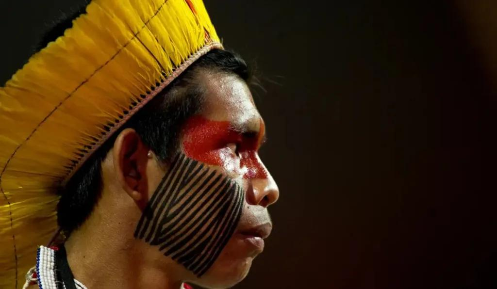
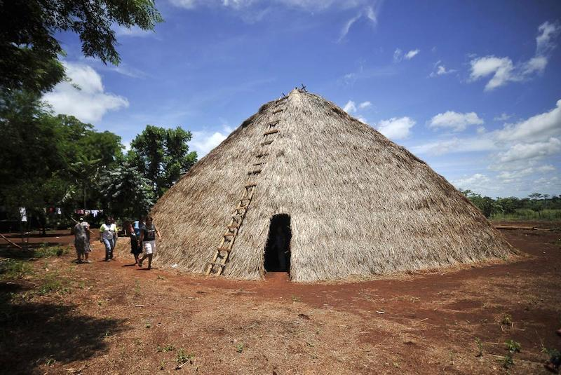

Arte, festas e danças
Conheça manifestações artísticas, pinturas, cantos, danças e tradições que fazem parte da cultura Tupi-Guarani.
Para os povos Tupi-Guarani, a arte não é apenas decoração. Ela expressa histórias, espiritualidade, pertencimento, relação com a natureza e saberes transmitidos entre gerações.
A pintura corporal pode representar identidade, proteção, rituais, celebrações e ligação com a comunidade.
Cestos, adornos, colares e objetos tradicionais revelam conhecimentos sobre materiais naturais e técnicas ancestrais.
Cantos e instrumentos fazem parte de rituais, encontros comunitários e momentos de transmissão cultural.
As danças fortalecem vínculos, marcam celebrações e mantêm vivas memórias coletivas.
O vídeo abaixo ajuda a compreender a importância das tradições indígenas e suas formas de expressão cultural.

